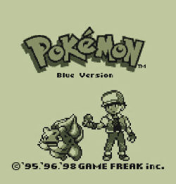

Impressões
Eu já tinha visto imagens do jogo várias vezes, sabia de como ele se parecia. Não achava os sprites feios, mas com certeza não era a mesma coisa que jogar FireRed com todas aquelas cores.
Uma das coisas que mais chamou atenção foi o fato de que nem todos os Pokémon tem sprites próprios quando estão na visualização geral da sua party, na verdade, pouquíssimos têm. Acho que o espaço de pixels pra representar cada design é tão curto que resolveram fazer apenas poucos sprites genéricos e encaixar eles em vários Pokémon diferentes.
A gameplay do jogo é muito satisfatória, acho que o nível dos oponentes é bem equilibrado. As batalhas com treinadores não são fáceis ou difíceis demais. Também não senti necessidade de parar a aventura pra treinar meus Pokémon em nenhum momento. O jogo é generoso com XP, então toda a minha equipe consegue evoluir bem ao mesmo tempo.
Pontos Negativos
Como pontos negativos, dá pra dizer que o jogo é um pouco lento, principalmente pelo fato de não existir um botão pra correr, como nos jogos seguintes da franquia. É um grande teste de paciência, mas que é recompensador em muitos momentos da jornada.
